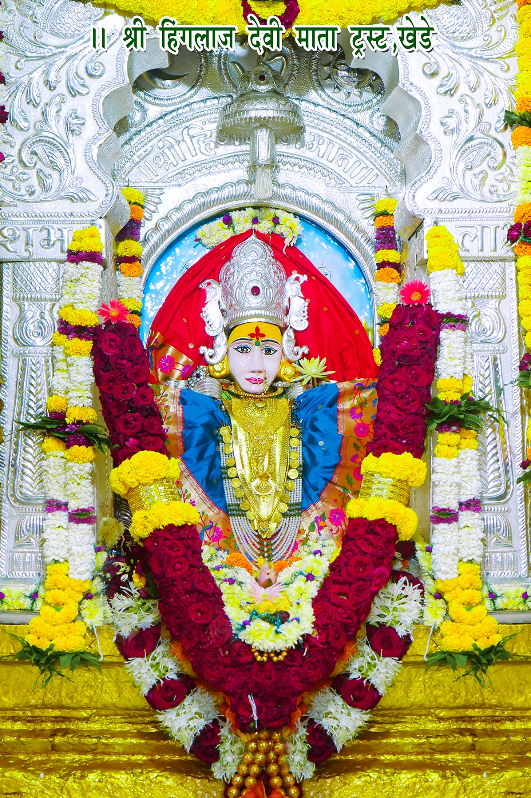

🚩श्री हिंगलाज देवी मातेची वर्षातील साजरी होणारे उत्सव.🚩
चैत्र नवरात्र उत्सव. (गुडीपाडवा ते रामनवमी).
मातेचा प्रगटदिन (श्रावण शुद्ध चतुर्दशी) !!(रक्षा बंधनाच्या आदल्या दिवशी).
प. पु. डोंगरपुरीजी महाराज भंडारा (तिसरा श्रावणी सोमवार).
अश्विन नवरात्र घटस्थापना.
मातेचा जन्मोत्सव (पौष पौर्णिमा)!!(डिसेंबर जानेवारी दरम्यान).
🚩अश्विन नवरात्रात घटस्थापनेनंतर येणाऱ्या पहिल्याच बुधवारी या देवीची यात्रा भरते. देवीचे वार मंगळवार शुक्रवार असून यात्रा बुधवारीच का भरते ?
तर विक्रमनामसंवमत्सर, नवमी तिथी, श्रावण मास, शुक्रवार दिन ,शुद्ध पक्षास देवी डोंगरपुरी महाराजांबरोबर निघाली ती येथे येऊन पोहोचली त्यावेळी विक्रमनामसंवस्तर,
चतुर्दशी,शुद्ध पक्ष, श्रावण मास व वार बुधवार होता म्हणून चतुर्दशी हा जन्मोत्सव व नवरात्रात बुधवारीच यात्रा भरते,
कारण तोच तिच्या जन्मवार आहे 🙏अशा या जगतजननी अंबाबाई हिंगलाज मातेला शतशा: प्रणाम🙏🚩
देवी मंदिरात नवरात्रोत्सवात व प्रत्येक पोर्णिमेला दुर्गा सप्तशती पाठ पठण केले जातात तसेच नवरात्रोत्सव निमीत्त विविध प्रकारचे
धार्मिक कार्यक्रम आयोजन केले जाते आता पर्यंत नामवंत कीर्तनकाराचे हरीकीर्तन,हरीपाठ,पोवाडे ,भव्यदिव्य रामायण,भव्यदिव्य महाभारत,देवी भागवत,
भव्यदिव्य संगीतमय मिरा कथा, श्रीमद्भभागवत कथा,ई. व महाप्रसादाचेही आयोजन केले गेले. नवरात्र उत्सवात रोज स. अभिषेक ,आरती, दु महानैवेद्य
सायं महाआरती होते ,महाआरतीला हजारो भाविक भक्त हजेरी लावतात. नवमीला नवचंडी महायज्ञ केला जातो. 🚩
🚩दैनंदिन कार्यक्रम 🚩
सकाळी महापूजा .
दुपारी महापंचखाद्य नैवेद्य .
सायंकाळी महाआरती. 🚩🎊

🚩श्री हिंगलाज माता खालील समाजाची कुल स्वामिनी आहे 🚩
1)दशनाम गोसावी समाज 2) ब्रह्मक्षत्रिय समाज(ठाकूर) 3) तेली समाज 4) कोकणस्थ ब्राह्मण समाज 5) साळी समाज 6) काही मराठा समाज 7) फुलमाळी समाज 8) भावसार (रंगारी) समाज 9) बेलदार समाज 10) पटेलिया समाज (पंचमहालाकडील) 11) धनगर समाज 12) गुजरात मधील रावल घराणी 13) खत्री समाज 14) जोधपुर येथील गुराखी समाज 15) बैरागी समाज 16) यादव कुलीन पांडव 17) सिंधी समाज 18) सहस्रार्जुन क्षत्रिय समाज 19) संन्यासी समाज 20) बंजारी समाज (ऊसतोडी) 21) कुमावत समाज 22) बंजारा(गोर) समाज 23) गुजराती समाज 24) भाटीया 25) कहार 26) निमाड कडील जादुगर जमात 27) मारवाडी (खत्री) 28) परदेशी लोहार 29) सोनार समाज 30) शिंपी समाज 31) स्थानिक पंचक्रोशीचे ग्रामदैवत आहे. 🚩🎊🙏🎊
🚩श्री हिंगलाज देवी मंदिरात येण्याचा मार्ग 🚩
🚩श्री हिंगलाज देवी मंदिर हे नाशिक जिल्ह्यातील निफाड तालुक्यातील (खेडे)सध्याचे हिंगलाजनगर या गावी आहे. मुंबईकडुन येताना नाशिकवरून पुढे 40 कि.मी.
🚩निफाड पुढे 6 कि.मी.उगाव तेथुन नांदुर्डी रस्त्याने गेल्यावर विनीता नदी ओलांडल्या नंतर हिंगलाजनगर(खेडे) गावालगत हिंगलाज देवीचे भव्य मंदिर आहे .
🚩 शिर्डी/नगर कडुन येणार्यासाठी कोपरगाव,येवला,विंचुर,निफाड किंवा मधल्या (चासनळी) मार्गाने येऊ शकता.
🚩 धुळे/जळगांव कडुन येणार्या साठी धुळे, मालेगाव,चांदवड,उगाव मार्गे येता येते.
🚩 वणी/गुजरात कडून येणार्या भाविकांना वणी, पिंपळगाव ब.,दावचवाडी, नांदुर्डी, हिंगलाजनगर या मार्गाने येऊ शकता.
🚩एसटी बसेस ने येणार्या साठी निफाड बस स्टॅन्ड, लासलगाव, पिंपळगाव ब. स्टॅन्ड आहे.
🚩 रेल्वे ने येणार्या साठी निफाड रेल्वे स्टेशन, लासलगाव स्टेशनवर उतरल्यावर ऑटो रिक्षाने येता येते...